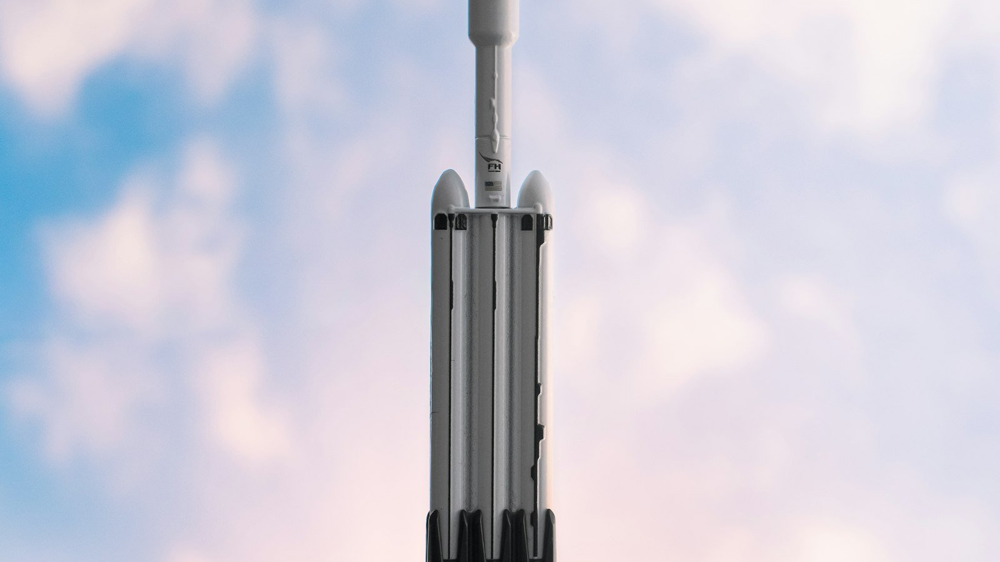
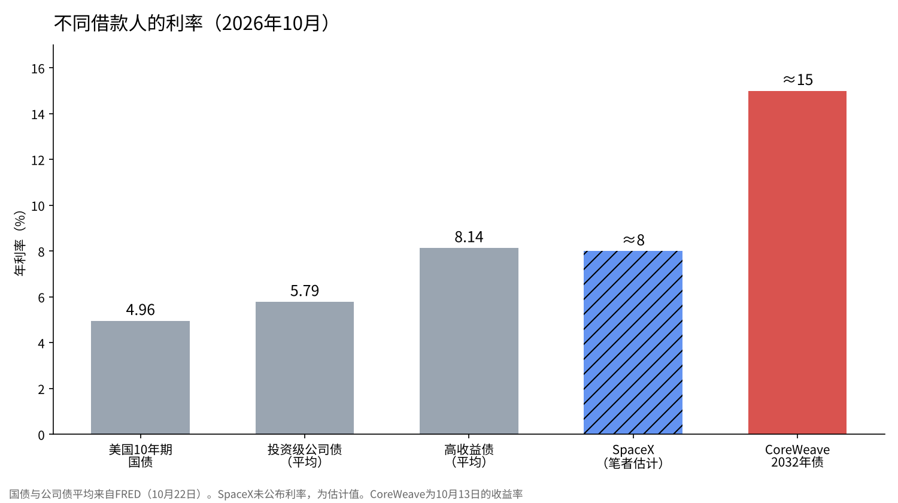
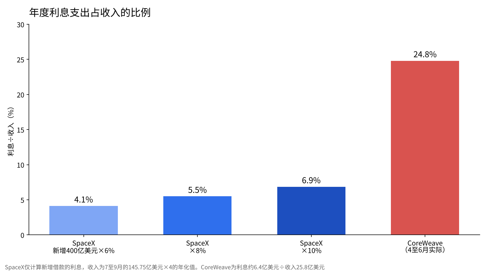

SpaceX的400亿美元借款是以多少利率借到的？与CoreWeave的15%对照
10月25日，马斯克在X上写道，SpaceX已完成用于购买GPU的400亿美元借款。同在10月，AI云公司CoreWeave的公司债收益率一度达到15%。
两者都是投向AI算力的借款。然而，放贷方给出的价格完全不同。
本文我在日本，依据SpaceX的财报资料和美国的利率统计，估计SpaceX的借款利率水平，并与CoreWeave对照，确认它是高还是低。

已公布的事，和尚不清楚的事
关于SpaceX，已公布的是：总额400亿美元，主要是可以在到期前偿还的债务，用途是英伟达的GPU。这批GPU预计在2027年1至6月到货。马斯克提到的理由是公司被视为投资级，以及星链和发射的收入。
另一方面，利率、期限、评级机构和承销银行，在撰写本文时尚无法确认。因此下面的利率是估计值。我会把估计的前提逐一写明。
作为标尺的三个利率
估计需要标尺。根据圣路易斯联储的数据库FRED，截至10月22日，美国10年期国债收益率为4.96%。投资级公司债的平均收益率为5.79%，高收益债（评级较低的公司债）的平均为8.14%。
国债与投资级之间相差0.83个百分点，投资级与高收益之间相差2.35个百分点。即便借的是同样的美元，利率也会因放贷方判断的偿还把握而拉开这么大。
投资级是指评级机构评级在BBB-及以上的借款人。养老金、保险公司等很多资金按规定必须借给投资级借款人，所以是否进入这一档，决定了能向多少放贷方借钱。以相对美国国债的利差来看，投资级平均为0.83个百分点，高收益债平均为3.18个百分点。

CoreWeave的15%意味着什么
CoreWeave是一家把摆满GPU的数据中心出租给企业的AI云公司。其票面利率9.625%、2032年到期的公司债，在10月13日收益率一度达到15%。票面利率9.75%、2031年到期的公司债也以约14.9%成交。
收益率比发行时的票面利率高出5个百分点以上，意味着债券价格下跌了这么多。据报道，其总债务约520亿美元，4至6月的利息支出约6.4亿美元，相当于收入25.8亿美元的约25%。5年期CDS（防范违约的保险费）一度超过1,140个基点。市场给出的价格比高收益债的平均还高出近7个百分点。
用财报确认SpaceX的偿还能力
根据SpaceX公布的7至9月财报，收入为145.75亿美元，比上一年增长161%。其中AI相关收入为75.6亿美元。净利润为44.04亿美元，资本支出为195.93亿美元，其中投向AI的为164.44亿美元。
从资产负债来看，9月底的现金为512.94亿美元，债务和租赁为388.44亿美元，现金多于债务。不过，10至12月的资本支出预计为350亿至400亿美元，约为7至9月的两倍。这次的400亿美元，可以理解为支撑这笔投资的借款。
如果先把借来的400亿美元加进现金，现金约为913亿美元，债务和租赁约为788亿美元，现金仍然更多。但如果10至12月花掉350亿至400亿美元，现金会降到约513亿至563亿美元，比债务少约225亿至275亿美元。这个季度可能是SpaceX首次在净额上转为负债的一方。我认为这正是放贷方定利率时看的地方。
利率是多少，负担有多重
由于利率未公布，我按6%、8%、10%三种情况计算。400亿美元的年度利息分别为24亿美元、32亿美元和40亿美元。相对于7至9月收入乘以4的年化收入约583亿美元，分别为4.1%、5.5%和6.9%。与CoreWeave的约25%相比，负担的轻重不同。
| 利率 | 年度利息 | 占年化收入（约583亿美元） | 占年化净利润（约176亿美元） |
|---|---|---|---|
| 6% | 24亿美元 | 4.1% | 13.6% |
| 8% | 32亿美元 | 5.5% | 18.2% |
| 10% | 40亿美元 | 6.9% | 22.7% |
这个计算只针对新增借款，不包括既有债务的利息。即便如此，利息相对于收入规模较小这一点，可以用数字确认。
也从利润的角度看一下。相对于7至9月的净利润44.04亿美元，按8%计算一个季度的利息为8亿美元，利润约为其5.5倍。CoreWeave则有四分之一的收入用于支付利息。同样是投向AI算力的借款，偿还来源的厚度完全不同。

8%出头的估计
我的看法是，SpaceX大概是以8%出头的利率借到的。如果美国国债在5%左右，那就是在其上加了约3个百分点的水平。在同样的AI投资上，我认为软银的借款利率在9%左右。
8%高于投资级平均的5.79%，接近高收益债平均的8.14%。如果号称投资级却落在这个水平，我能想到两个原因。一是未上市，信息披露有限。二是这笔借款投向GPU，一种几年内就会贬值的资产。我认为设计成可以在到期前偿还，是为了在上市或利润增加使条件改善时再融资。

同样是AI借款，价格为何不同
CoreWeave与SpaceX的差别，在于还款的钱从哪里来。CoreWeave还款的来源，主要是出租GPU的租金。如果客户减少合同，收入和抵押品的价值会同时下降。
SpaceX有星链和发射这些另外的收入，算力也自己使用。出租的是多余的部分。自己用、把多余部分出租的一方，和仅靠出租来还款的一方，即便是同样的GPU，放贷方看到的风险也不同。15%与8%之间的差距，我理解为这种差别的价格。
另一点是借款期限与资产寿命的关系。GPU每两三年就会出新一代，旧一代的出租价格随之下降。CoreWeave的公司债在2031年和2032年到期，但到那时现在的GPU还能赚多少钱，没人知道。比资产寿命更长的借款，如果无法再融资就还不上。我认为SpaceX选择可以在到期前偿还的形式，也是为了把这个顺序反过来。
我是这样看的
我持有1,250股SpaceX。平均成本为138.07美元，10月26日的价格为144.75美元。我认为这次的借款并不削弱我持有的理由。
不过，10月我暂停了每月的买入。我持有的共享办公大楼的外墙维修费用还没出来。这与SpaceX的借款无关。在实业的支出明朗之前，我先停掉投入，再考虑卖股票。
我不投资拥有数据中心的公司。我认为投资阶段结束时，AI公司会先削减电费和算力采购。CoreWeave的15%，或许是市场提前为这个顺序定了价。利率公布后，我会对照检验这个估计。
检验的标尺也先定好。如果公布的利率在9%以上，说明市场把SpaceX的借款看作接近高收益债，我会理解为GPU投资的回收需要时间。如果在7%以下，说明它被当作接近投资级，我会理解为星链的收入作为偿还来源得到了认可。如果在8%左右，就与我的看法一致。无论哪种情况，我都不会马上改变持股数量。
出处
- SpaceX《Third Quarter 2026 Results》 https://s21.q4cdn.com/184289198/files/content_files/SpaceX-Reports-Third-Quarter-2026-Results.pdf
- Investing.com《Musk says SpaceX raised $40 billion in debt for GPUs》（2026年10月25日） https://www.investing.com/news/stock-market-news/musk-says-spacex-raised-40-billion-in-debt-for-gpus-4971248
- FRED《Market Yield on U.S. Treasury Securities at 10-Year》 https://fred.stlouisfed.org/series/DGS10
- FRED《ICE BofA US Corporate Index Effective Yield》 https://fred.stlouisfed.org/series/BAMLC0A0CMEY
- FRED《ICE BofA US High Yield Index Effective Yield》 https://fred.stlouisfed.org/series/BAMLH0A0HYM2EY
- Crypto Briefing《CoreWeave shares plunge as bond yields hit 15%》（2026年10月） https://cryptobriefing.com/coreweave-shares-plunge-bond-yields-15/
- UA.News（CNBC）《CoreWeave的CDS利差超过1,000个基点》（2026年10月） https://ua.news/en/finansi/spredi-cds-coreweave-perevishchili-1-000-b-p-cnbc
照片：Iván Martínez Díaz／Taylor Vick（Unsplash）。图表由YUKI CAPITAL制作
每天的数字和判断，我都记录在X上。